Eco-Friendly Gift Wrapping Idea
This year, Bob and I decided that we are going wrapping-paper-less! Every Christmas, after gifts are opened, we find ourselves lost in a mountain of torn, crumpled, wrapping paper. It almost gets to the point of playing Marco Polo just to find one another. Funny but sad.
So….. We are wrapping our gifts in fabric! That’s right fabric. The idea is that when these presents are unwrapped, the fabric can be saved by those who receive our gifts and can be reused the next time they give presents. This is a custom in some Asian countries, especially Korea. I love the idea that maybe years from now I could get a present from someone using a fabric that I used at one time. And who knows how many hands it had passed through. :)
We think it is time to make a change and change takes determination and commitment. If you decide to try this idea, don’t feel overwhelmed with the process. We don’t want to add any stress to our holiday seasons so try to do it with grace and ease. Meaning… breathe and have fun with the process.
When selecting the fabrics that you want to use, there are several ways to approach it. You can purchase fabrics, use existing fabrics tucked in your craft room, or perhaps you can recycle some old clothing or sheets… be creative. Just make sure that they are in good condition.
With so many wonderful prints and colors of fabrics that are available, you can really personalize the gift that you give, starting from the outside, in. Perhaps you are gifting a Western shirt, find fabric with cowboys/girls on it. Fabric stores are always running sales so if you shop wisely; you can save quite a bit of money in the long run.
Our goal is to adopt this new tradition for each gift-giving holiday. For gifts that will go outside of our home, I will attach a card that explains why their present is swaddled in fabric. As I said above, the hope is that they will save their “wrapping paper” and reuse it for their own gift giving, thus creating a ripple effect.
Don’t Burn Wrapping Paper
We are told not to burn gift wrap paper, so I had to learn why exactly. Through my Google research, I have found that wrapping paper can contain toxic fumes, lead, synthetic inks, plastic film, chlorine or metal-based foils, which release toxic and carcinogenic compounds into the air when burned….not something that should be inhaled. So forget a bonfire and the idea of roasting marshmallows over it.
Thinking that you can burn it in your fireplace? Think again… “Burning gift wrapping can cause a chimney fire. Gift wrap burns very quickly and very hot due to the low moisture content and wide surface area of the paper. Instead of a normal fire, with the addition of gift wrap, suddenly a roaring bonfire is created in the fireplace or wood stove, which it is not designed for. Sparks or flames can jump up through the damper and ignite nearby flammable creosote, resulting in a dangerous chimney fire.”
Often Wrapping Paper Can’t be Recycled
Ok, so we shouldn’t burn it, why not recycle it? More times than not, recycling centers won’t take it. The materials that go into making some wrapping papers result in it not always accepted for recycling. This can be due to the dyes used, it might be laminated and/or contains non-paper additives such as gold and silver-colored shapes, glitter, plastics, etc. which cannot be recycled. And a lot of wrapping paper has sticky tape attached to it which also makes it very difficult to recycle.
Can’t burn it, the chances are that your local recycling company won’t take it, so why not just send it to the landfill?! Everybody else does. I read that the holiday season contributes an extra 4 million tons of waste each year, attributed to wrapping paper, shopping and gift bags! If we all work on taking sustainable baby steps, we just might be able to make a difference.
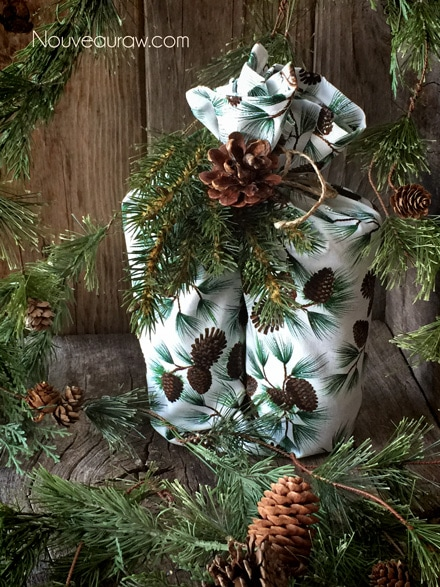
Tips on creating and wrapping with cloth:
- Determining the fabric size doesn’t have to be complicated. You can create the fabric wrap as you go or make them up ahead of time. It will take a little adjusting to getting used to this method, but I am confident that the end reward will be well worth it. I premade mine for Christmas, cutting them into various sizes.
- The main thing that I have learned is to keep the fabric square, regardless of the size. This will make it easier to gather up the sides.
- You will want to hem the edges of the fabric. This will give it a longer life for multiple uses by preventing the edges from raveling.
- If you don’t own a sewing machine, you can use pinking shears to cut the fabric. Not only does it add a decorative edge, but it also helps to keep the fabric from raveling.
- Ensure that the fabric is adequate to cover the bottom, sides, and top of your gift. Excess fabric is easier to deal with than not having enough.
- You can’t and don’t want to use tape to secure the fabric. Typical Scotch tape doesn’t stick to fabric and if you use packing tape or lord have mercy, duck tape… it will leave a sticky residue on the fabric which will just collect schmutzig!
- For securing the fabric, you can either tie it, use twine, or ribbon.
- If you want to give a gift to someone outside of your home, explain to them in a note on why you chose fabric to wrap it in and hopefully they will pick up the new tradition.
- Watch for seasonal fabric sales at your local craft and fabric stores. I use to buy all my wrapping paper after Christmas, tucking it away for the following year. You can do the same with fabric.
- If you don’t want to get locked into “seasonal” looking fabric, buy neutral colors so you can use it for any occasion.
- If the job feels daunting… invite some friends over who have sewing machines and make a party out of it. Create some raw treats, warm drinks, put some music on and create a beautiful memory! Or if they don’t have sewing machines, but you do, assign one person to cut, one to sew, and one to iron. And if nobody has a sewing machine, purchase a pair of pinking shears for each person and have at it.
- Here is a great video that will help you with some of the basics when it comes to wrapping a box in cloth. Click (here).
- Make sure the fabric you use isn’t see-through. We all love to peek at our gifts… but….
- Don’t use too thick of fabric or it will be too bulky when trying to swaddle the gift up.
- I timed myself making the wrapping “paper, ” and on average it takes about 6 minutes per fabric wrap. Not bad. :)
Cut fabric to size. Fold the edge over two times and hem with a straight stitch or zig-zag stitch. Iron and fold!
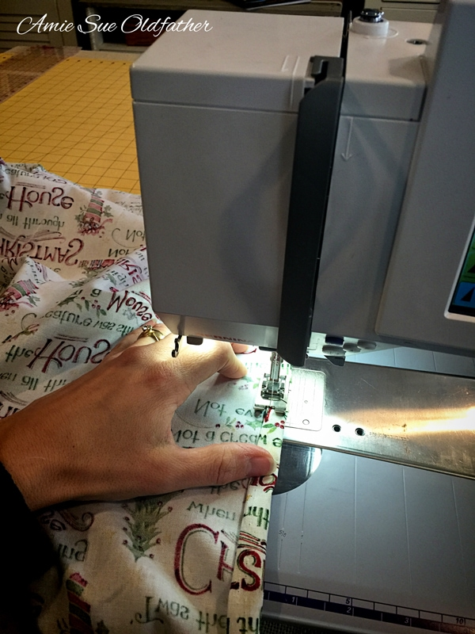
I have a pile completed but more to go.
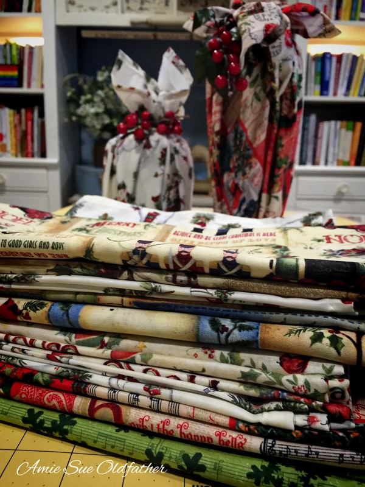
Here is a quick example of a gift all wrapped up in fabric wrapping paper.
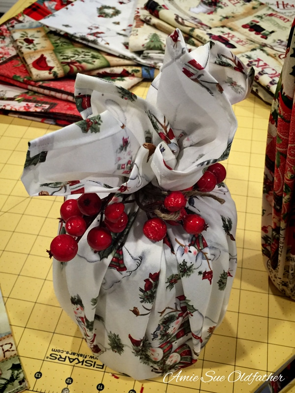
I will be adding more photos as I wrap the gifts. Have fun! As I promised… I am back with some more photos.
I spent part of the day today creating more wrapping “papers” and wrapping up gifts. I hope some of this helps.
The Blanket….
You could wrap clothing, towels, or any other soft items this way.
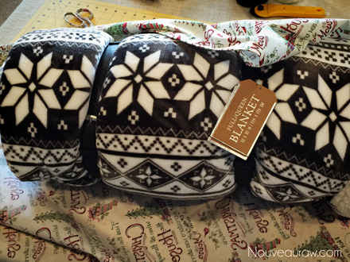
Place the blanket in the center of the fabric.
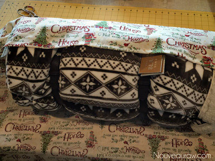
Completely roll the blanket in the fabric.
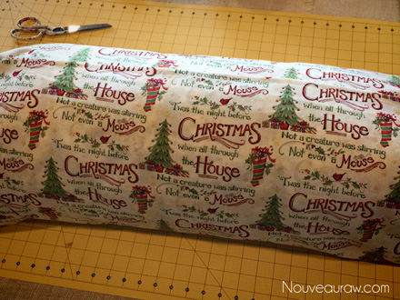
Gather the sides and tie shut with ribbon or twine. That’s it.
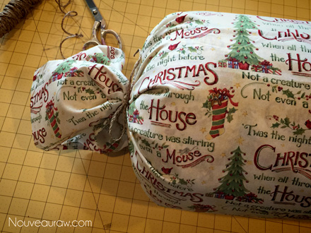
Two Jars…
I love mason jars, and I tend to use them as delivery vessels of yummy
raw treats. Here is an excellent way to wrap two jars at one time. This technique
can be used for other items that are similar in shape. For example, this would
be a fun way to wrap a pair of shoes. :)
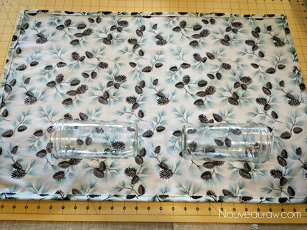
Place the jars towards the edge of the fabric, with enough space between
them so that when you stand them up, they can sit side by side.
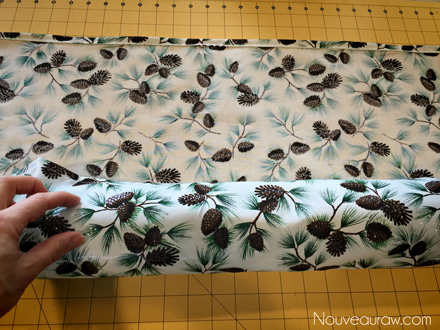
Roll them up into a tube shape.
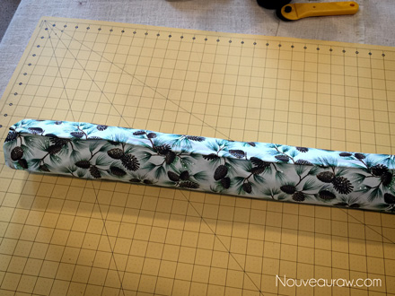
Grab the ends and fold the two sides together.
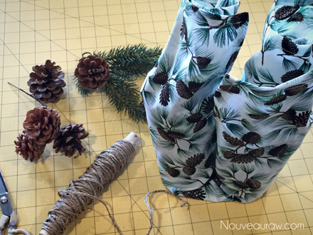
Gather and tie the two tops together. Cute as can be. :)
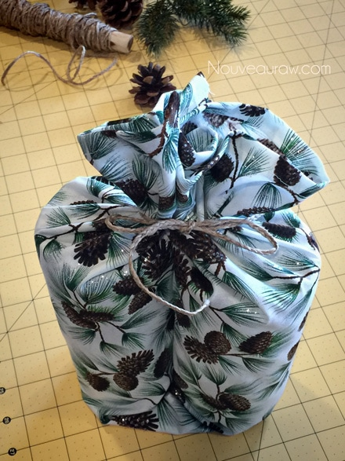
The toolkit…
With these photos, I am just giving you some ideas on how to wrap different shapes.
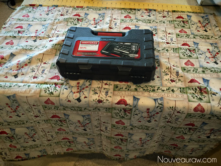
Place the box in the center of the fabric.
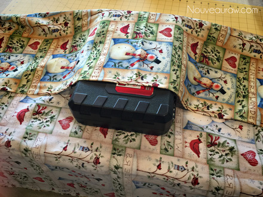
Fold both sides over.
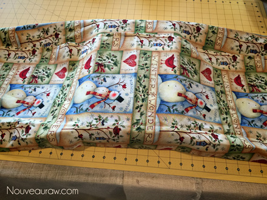
Take the loose fabric on the sides and roll each side towards the center,
creating a …. tail? So hard to describe actions sometimes. :) But I think
the photo helps. The scissor is a weight to hold it down while I took the photo.
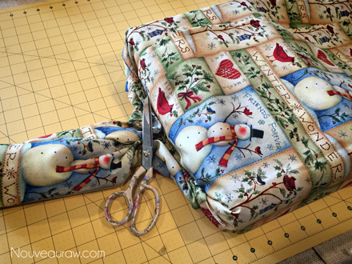
Repeat on the other side.
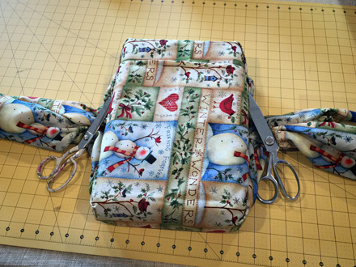
Now gather them on top of the box as seen below.
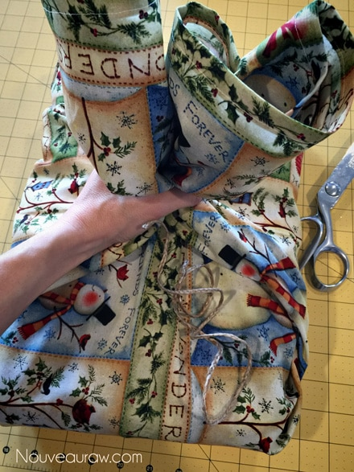
Tie together with ribbon or twine.
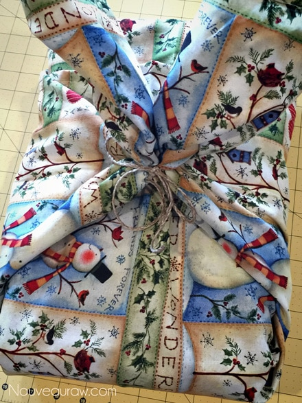
I then tucked the tails underneath. This is optional but worked with this gift.
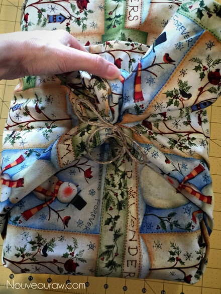
Darn! See that edge of fabric… looks messy.
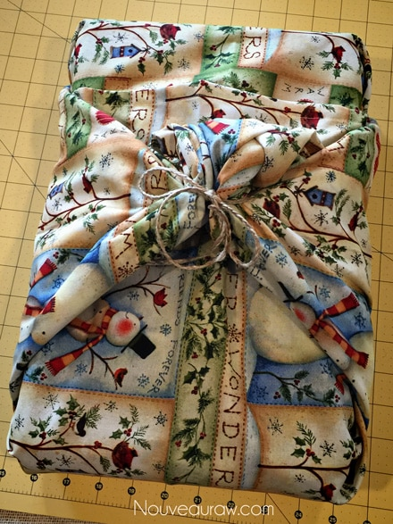
Oh… hey, a pocket. Yea yea a pocket! Great place to slide a Christmas
card into. Now it looks like I did it on purpose. :)
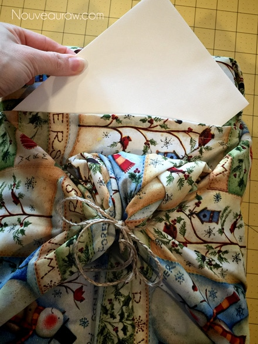
Perfect.
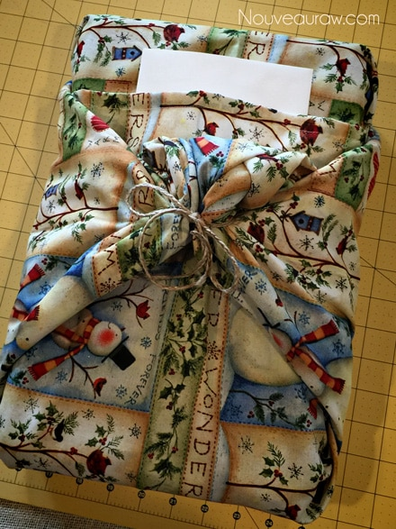
So far, the tree is looking fantastic with all the fabric wrapped gifts.
Here is a sample letter that we will include with each fabric wrapped gift.
Please feel free to edit it to your liking and include with your gifts as well.
Welcome to our new tradition of gift wrapping. Every Christmas, after all the gifts are opened, we find ourselves lost in a mountain of torn, crumpled, wrapping paper. It almost gets to the point of playing Marco Polo just to find one another. After learning that an extra 4 million tons of waste (wrapping paper, gift bags, and ribbons) goes into landfills during the holiday season, we decided it was time to make a change.
This isn’t a new tradition, in Korea, it is referred to as Bojagi and in Japan, it is called Furoshiki. But it’s a new tradition that we are implementing in our household, and we hope that it is something you will find useful as well. So the trick is for you to save this wrapping fabric and use it to wrap the next gift that you give. And you don’t have to stop at Christmas; there’s birthdays, anniversaries, other holidays whenever you give presents. Check with that guy Google; there is lots of info about fabric wrapping techniques online. Much Love Bob and Amie Sue
12/12/14 Another Update photo…
Every year when our family gathers for Christmas, I play Santa and provide matching Christmas jammies for everyone. I had a great time wrapping them in the fabric wrap this year, so much so that I wanted to share a photo with you. :)
Update 12/27/14
For the eve of opening gifts, I prepared a station for all used gift
wrap to gather. Clean up has never been easier and opening
gifts wrapped in cloth was so much more peaceful.
© AmieSue.com